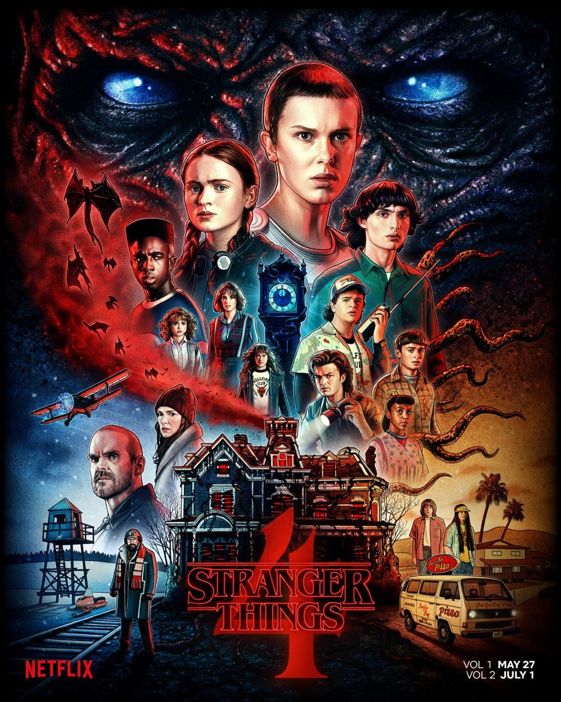

Merhaba ben Mehmet, kodluyoruz ile yazilim öğreniyorum. Bu yaptigim ikinci ödev. Bu ödev de sevdiğim film dizi ve kitaplardan bahsedecegim.

Stranger Things, ABD yapımı bilimkurgu-korku türündeki internet dizisi. Duffer Kardeşler tarafından yönetmenliği, senaristliği ve yönetici yapımcılığı üstlenilen dizi aynı zamanda Shawn Levy ve Dan Cohen tarafından üretilmiştir